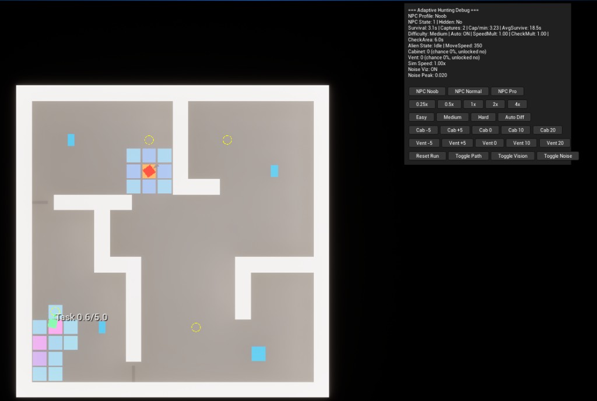
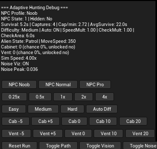
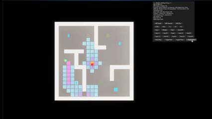
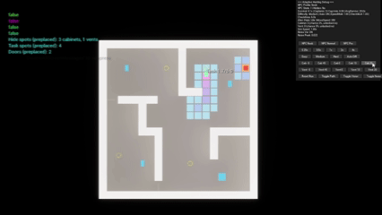

Unreal predator AI study. Make it feel like it learns you, without teaching it anything.
Two mechanics, stacked: a multi-layer hunt AI, and fake self-learning — the Isolation illusion that the predator adapts to you, built with authored rules rather than a model that trains.
Multi-layer means the pressure is not one brain. A session layer watches survival and captures and pushes Easy / Medium / Hard. A learning component counts hide habits and unlocks cabinet and vent checks when those counters cross a threshold. Under that, a hand-authored FSM runs Patrol, Investigate, Chase, and CheckArea. The creature only gets senses; the escalation above it decides what it is allowed to do.
Fake self-learning is the point of the gates. Hide in cabinets enough and checking cabinets becomes legal and more likely. It reads as “it learned my trick.” It is counters and thresholds — UAlienLearningComponent — not machine learning. You can tune when the cheat starts. You can also turn it off.
NPC profiles (Noob / Normal / Pro) are the measuring stick: same predator, different competence, so we can tell whether the illusion holds across panic and evasion rather than winning against one prey type.
Alien: Isolation's xenomorph feels like it adapts to you. It is not training a model. A Director AI is omniscient — pacing, menace, jobs on a blackboard. A behavior tree only has senses and runs search, chase, and attack. The hunt feels personal because the director manages fear and the creature is allowed to miss.
Team 19 researched that split and presented it together. I specified how our agent would adapt, designed most of the NPC test profiles, and built most of the Unreal prototype in C++. Blueprints were team. The playable is a test bed, not a full game.
The trap is to build an unstoppable learning machine. Escalation that invents invisible advantages eclipses the player's ability to adapt, which is the opposite of a survival horror fantasy — you stop feeling hunted and start feeling cheated. What we wanted was the systemic illusion of learning: an agent that tracks how you actually play and opens authored behaviors when those habits cross a line.
That distinction is the whole project. Machine learning would invent a cheat you cannot read. Metric gating invents a curriculum you can tune. The alien that starts checking lockers after you have lived in them three times is still playing by rules you could write on a whiteboard, which means a designer can decide when the pressure rises instead of discovering it after the fact.
I owned the adaptation spec and wired the gates that actually run in the Unreal test bed. Track habits and session outcomes. When a counter or pacing metric crosses a threshold, new pressure becomes legal or gets scaled. Escalation is authored and readable: you can tune when the alien starts checking cabinets. It does not invent an invisible cheat.
| Metric | What it catches | What opens / scales |
|---|---|---|
| Cabinet hide count | How often prey uses cabinets | Unlocks cabinet checks; chance rises with the counter (UAlienLearningComponent) |
| Vent hide count | How often prey uses vents | Same gate path for vents, tracked separately |
| Avg survival time | How long prey lasts between captures | Feeds auto difficulty (Easy / Medium / Hard) |
| Captures per minute | How often the hunt ends | With survival, votes difficulty; scales move speed, check chance, and CheckArea duration |
| Noise peak | How loud the map is right now | Not a gate — drives Investigate, then CheckArea at the peak |
The learning pipeline is the same for both hide types: action → counter → unlock step → check chance → CheckArea can pick that hide. Difficulty sits one layer above and multiplies those chances once they exist. Noise is a sense, not a curriculum row — it tells the FSM where to look, not whether a new behavior is legal.
The study deck also listed a fuller Isolation-style set (flamethrower, LOS time, repeated escape routes). Those stayed research targets. The prototype instruments the hide gates and the session difficulty loop, which is enough to test whether authored “learning” reads as intentional rather than random.
The design pressure sits on the unlock step and the difficulty thresholds, not on the architecture. Set them too low and the alien escalates before the prey has a habit; set them too high and the adaptation never lands.

The team set four layers, each managing the one below. I implemented toward that structure in the prototype.
| Layer | Owns | Job |
|---|---|---|
| Omniscient | Pacing curves | Keep escalation from becoming frustration |
| High-level | Strategy | Process senses; augment or swap strategies |
| Mid-level | Execution | Carry out the current strategy |
| Low-level | Primitives | Search, chase, and attack |
The split mirrors Isolation's Director versus behavior tree. Omniscient knowledge stays out of the creature's hands, so the hunt can feel personal without the alien cheating through walls. Metric gates feed the upper layers: a threshold crossing is not a new attack animation, it is permission for a strategy change that the lower layers then execute with ordinary senses.
NPCs were the experiment around the predator. I designed most of three profiles, not as flavour cast, but as instruments for measuring whether the alien's pressure was readable. Study-deck names mapped onto the build as Civilian → Noob, Technician → Normal, Ghost → Pro.
| Profile | Behaviour in the build | What it tests |
|---|---|---|
| Noob | Slow; small threat radius; finishes the task under threat; cannot hide | Whether panic and stubbornness read as weakness the predator can exploit |
| Normal | Base speed; mid threat radius; flees; cannot hide | Whether a short assessment and flee still leave a survivable window |
| Pro | Fast; wide threat sense; can hide in cabinets / vents | Whether skilled evasion and hide use still feel hunted rather than trivial |
Three competence levels on the same threat is a controlled experiment. If Noob dies every time and Pro never feels pressure, the predator is tuned to one prey type. If all three produce different but legible outcomes, the agent is doing the job Isolation's Director does: managing fear across a range of competence rather than winning a fight.

Most of the Unreal prototype in C++. The gating pipeline, the agent structure toward the four-layer model, and the hooks the NPC profiles needed to react. Blueprints were shared team work for wiring and iteration speed where they made sense.
A research prototype has a different success condition than a shipped game. The question was not whether the alien was fun for an hour, it was whether the illusion held when you watched the meters move and the gates open. If a cabinet habit opened cabinet-check behavior, and a Pro still looked hunted rather than scripted, the study worked.

Xeno shipped as a research prototype and a study deck, not a complete game, which is the right shape for a course whose question was “how does Isolation's predator actually work” rather than “can we remake Sevastopol.” The part I would redo is not the research. It is the order I built in, and the tools I reached for while I did.
I coded most of the prototype in C++. Looking back, I would have lived in Blueprints much earlier. C++ was the familiar hammer from Overseas and Hellmaker, and it cost me the thing Unreal is built around: iterating on behavior without a compile between every guess. Metric gating and strategy swaps are exactly the kind of system where you want to move a threshold, play ten seconds, and move it again. Paying a rebuild for each of those passes is the same trap I already wrote about on Overseas — and this time I walked into it with a better alternative sitting in the editor.
The workload split is the other half of that. I did not foresee how hard the AI behavior itself would be, so I took more of it than one person should hold on a four-person team. Specifying the gates, implementing the agent, and designing the NPC instruments are three jobs that look adjacent on a slide and become three different kinds of stuck when they live in one head. Splitting earlier would not just have been fairer. It would have forced the interfaces between those pieces into the open, which is usually where the real design work is.
The build order was wrong in a more specific way. I started with the map and the NPCs — the things you can see — and left the overall controlling AI until there was something pretty to drop it into. That feels productive and is the wrong experiment. The question Xeno was asking lived entirely in the Director-shaped layer: does pacing plus gated strategy produce the illusion of learning? You can answer that with text logs, fake meters, and a console before a single corridor exists. Building the world first meant every bug in the predator was tangled with navigation, collisions, and NPC timing, so I could not tell whether a bad hunt was a bad gate or a bad map.
If I picked it up again, the first week would be the controlling AI alone — metrics, thresholds, gates, strategy swaps — tested against printed player-action scripts and a log of which behaviors became legal when. Only once that loop was boringly clear would I put a body on it and walk it through a room. The NPCs and the map are validation for a system that already works on paper, not a substitute for building the system.
It rhymes with both earlier projects. Overseas taught me to expose tunables before I need them. Hellmaker taught me to ask before routing around a gap. Xeno is the third version: build the thing the study is actually about first, in the medium that lets you change it fastest, and treat everything else as a test harness.
Related Gossip Simulator — same trimester; behaviour-tree multi-agent epidemic before the Unreal predator study.
Also Overseas — earlier C++ systems work; different problem, same habit of making pressure readable.
Questions soniclinxin@gmail.com · LinkedIn